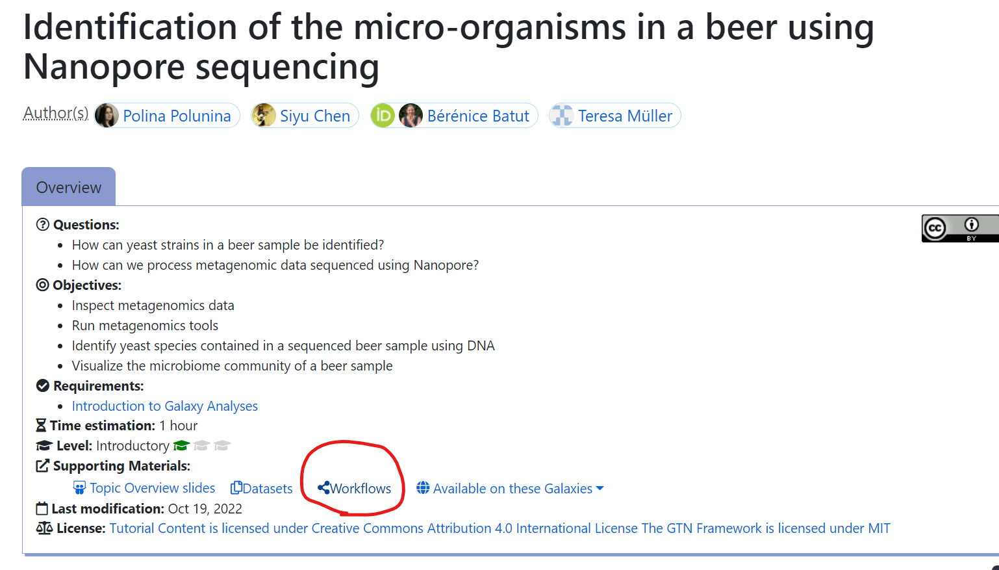
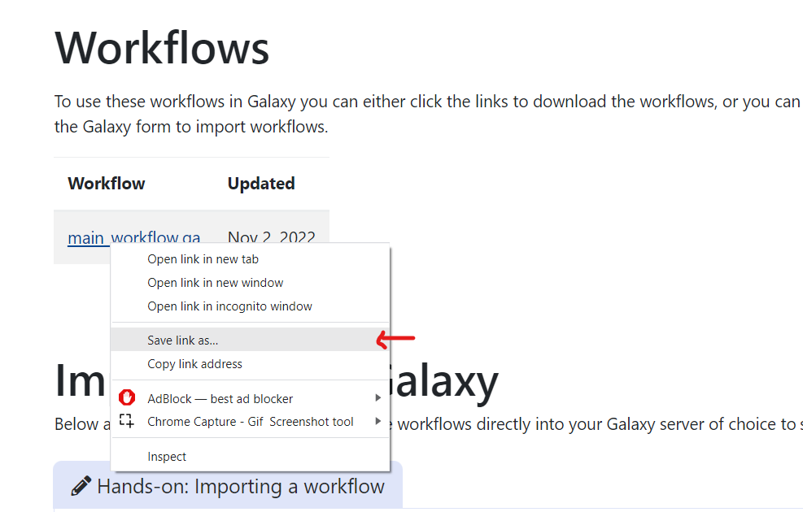

Usage¶
To use this tool, four inputs need to be passd in the command line.
The general structure of the tool, starting with the four inputs on the left, is shown on the graph:

How to get the required inputs:
(In the showcase below, some example inputs are included, feel free to try out the tool with them)
URL to history (the history to be evaluated):
Firstly, you need to have already created a Galaxy history. Then you need to follow the instructions here to publish your history and get the Share Link URL which we need for the argument -u: https://training.galaxyproject.org/training-material/faqs/galaxy/histories_sharing.html
$ -u https://usegalaxy.eu/u/siyu_chen/h/assemblyhands-onsiyu-chen
URL to workflow (the standard workflow)
To find the link to the standard workflow, you need to go on the Galaxy Training website: https://training.galaxyproject.org/, and then find the corresponding tutorial to your history.
In the tutorial page, you will find the standard workflow (as circled red):
{kind=link}
Click into it, then right click on the .ga file to copy the link address. This is the URL we need.
{kind=link}
$ -w https://usegalaxy.eu/training-material/topics/assembly/tutorials/general-introduction/workflows/assembly-general-introduction.ga
Galaxy API Key:
To get your own Galaxy API key, follow the instructions here: https://training.galaxyproject.org/training-material/faqs/galaxy/preferences_admin_api_key.html
$ -a Dxxxxxxxxxxxxxxxxxxxxxxxxxxxxxxjsdas
Output Path:
This argument is actually optional, as if there is no value given, the final report will be put to the root folder of ghevaluator, but if you want to specify a path, the example input should be like:
$ -p "path/somepath/"
To run the program after installation, simply run the command like followed:
$ ghevaluator -u <url to history> -w <url to standard workflow> -a <api key>
The sample final report is of the structure shown on the diagram below: